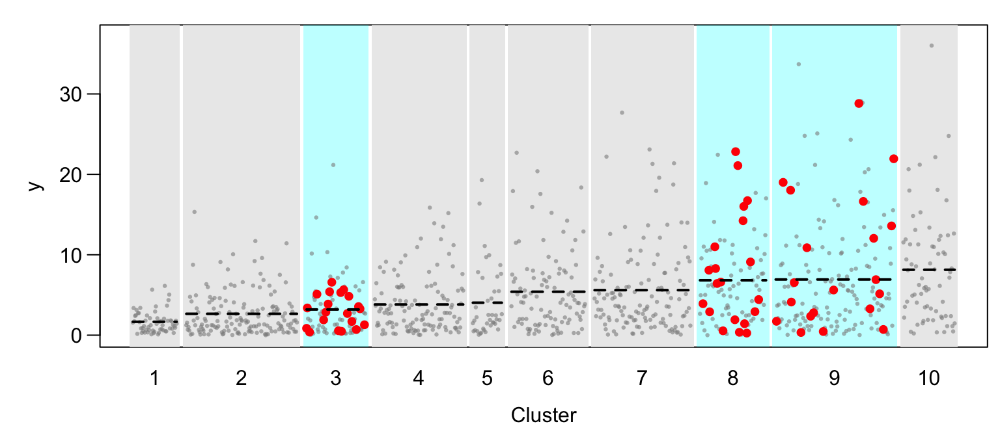
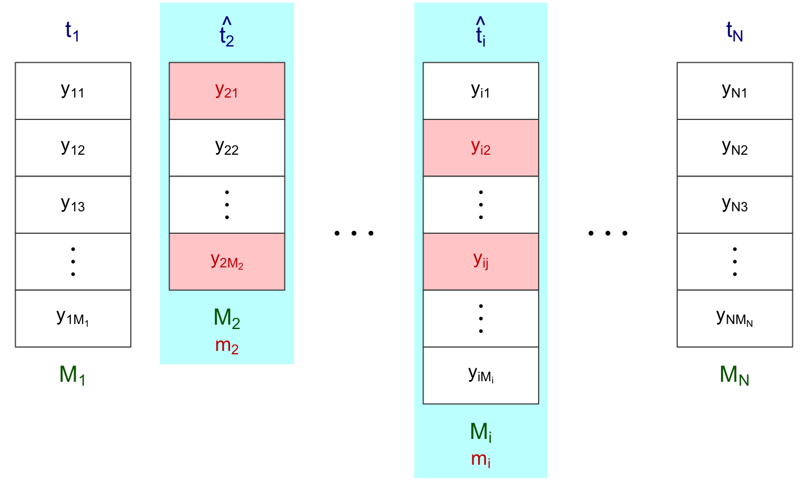
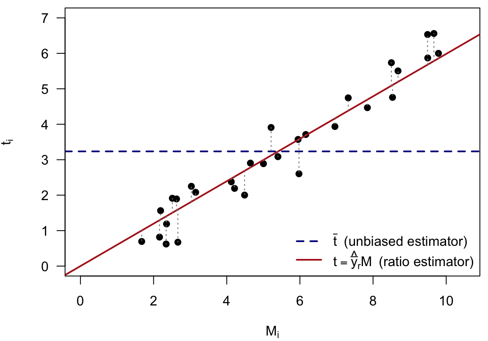
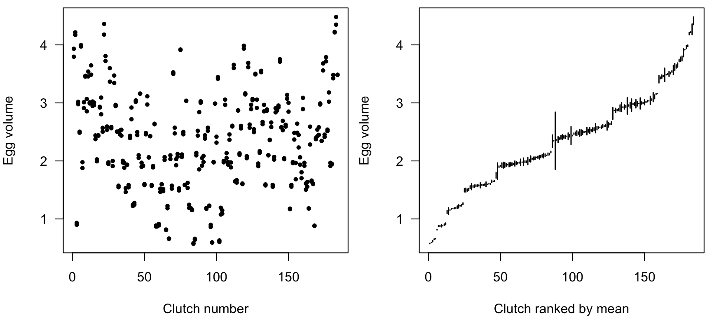

6 Cluster Sampling
6.1 What Is Cluster Sampling?
Suppose we want to find out how many bicycles are owned by the residents of a community of 10,000 households. We could take an SRS of 400 households. Alternatively, we could divide the community into blocks of about 20 households each, select 20 of the 500 blocks at random, and then interview every household (or a subsample of the households) in each selected block. The second plan is an example of cluster sampling. The blocks are the primary sampling units (psus), or clusters. The households are the secondary sampling units (ssus); often, as here, the ssus are the elements of the population.
Why would we sample clusters rather than elements?
- A sampling frame of the observation units may be difficult, expensive or impossible to construct. We cannot list all the honeybees in a region, or all the customers of a store. A list of the individuals in a city may be obtainable only through a list of housing units, which is time-consuming and expensive to build.
- The population may be widely spread out geographically, or may occur in natural clusters such as households or schools. It is then much cheaper to sample clusters than to take an SRS of individuals. To survey nursing-home residents, it is far cheaper to sample nursing homes and interview every resident in them than to take an SRS of residents, which might require travelling to a home to interview just one person.
The price is usually precision. Figure 6.1 illustrates a two-stage cluster sample from a synthetic population of \(N = 10\) clusters of different sizes, from \(M_i = 40\) to \(160\) units, sorted by their means. Three clusters are selected by SRS (shaded), and an SRS of \(m_i = 20\) units is taken in each. Only the selected clusters are observed. When the cluster means differ, as here, the estimate depends heavily on which clusters happen to be chosen, and a cluster sample is usually less precise than an SRS of the same number of units.
The material in this chapter corresponds to Sections 5.1–5.3 of Lohr and Chapters 8 and 9 of Scheaffer et al.
6.1.1 Cluster sampling versus stratified sampling
Both designs partition the population into groups: every element belongs to exactly one stratum, or to exactly one cluster. The difference is in how the groups are used (Figure 6.2). In stratified sampling we take an SRS from every stratum. In one-stage cluster sampling we take an SRS of clusters and observe every element in the selected clusters; the other clusters are not observed at all.

The two designs therefore call for opposite kinds of groups. Stratification gains precision when each stratum is internally homogeneous, because only the variability within strata enters the variance. Cluster sampling loses precision when the clusters are internally homogeneous, because only a few clusters are seen, and the precision depends mainly on the variability between the cluster means. Ideally, each cluster would be a miniature of the whole population.
6.2 Notation for Cluster Sampling
6.2.1 Population quantities
In cluster sampling the population \(\mathcal U\) is the population of \(N\) psus. Note the change from earlier chapters: \(N\) is now the number of psus, not the number of elements. Psu \(i\) contains \(M_i\) ssus, and we write \[ y_{ij} = \text{the measurement on the } j\text{th ssu in the } i\text{th psu}, \qquad j = 1, \ldots, M_i,\quad i = 1, \ldots, N . \] Figure 6.3 displays the population as a row of clusters. Each cluster is a column of cells, one cell per ssu, holding its value \(y_{ij}\). The clusters have different numbers of cells: the size \(M_i\) of each cluster is written at its bottom, and its total \(t_i\) at its top.

The psu-level quantities are the cluster totals and their spread: \[ t_i = \sum_{j=1}^{M_i} y_{ij} \quad(\text{total in psu } i), \qquad t = \sum_{i=1}^N t_i \quad(\text{population total}), \] \[ M_0 = \sum_{i=1}^N M_i \quad(\text{number of ssus}), \] \[ S_t^2 = \frac{1}{N-1}\sum_{i=1}^N \Big(t_i - \frac tN\Big)^2 \quad(\text{population variance of the psu totals}). \] The ssu-level quantities describe the individual elements: \[ \bar y_U = \frac{1}{M_0}\sum_{i=1}^N\sum_{j=1}^{M_i} y_{ij} = \frac{t}{M_0} \quad(\text{population mean per ssu}), \qquad \bar y_{iU} = \frac{t_i}{M_i} \quad(\text{mean in psu } i), \] \[ S^2 = \frac{1}{M_0-1}\sum_{i=1}^N\sum_{j=1}^{M_i}(y_{ij}-\bar y_U)^2 \quad(\text{population variance}), \] \[ S_i^2 = \frac{1}{M_i-1}\sum_{j=1}^{M_i}(y_{ij}-\bar y_{iU})^2 \quad(\text{variance within psu } i). \] Here \(\bar y_U\), the mean per element, is usually the quantity of interest, and \(\bar t_U = t/N\) is the mean per psu.
6.2.2 Sample quantities
The sample is drawn in up to two stages (Figure 6.4). First an SRS \(\mathcal S\) of \(n\) psus is drawn from the \(N\) psus. Then, in each sampled psu \(i\), an SRS \(\mathcal S_i\) of \(m_i\) of its \(M_i\) ssus is drawn. In one-stage cluster sampling every ssu of a sampled psu is observed, \(m_i = M_i\); in two-stage cluster sampling \(m_i < M_i\) for some psus.

From the subsample in psu \(i\) we compute the sample mean and the estimated psu total, \[ \bar y_i = \frac{1}{m_i}\sum_{j\in\mathcal S_i} y_{ij}, \qquad \hat t_i = \sum_{j\in\mathcal S_i} \frac{M_i}{m_i}y_{ij} = M_i\bar y_i , \] and from the \(n\) sampled psus the unbiased estimator of the population total and the sample variance of the estimated psu totals: \[ \hat t_{\text{unb}} = \frac{N}{n}\sum_{i\in\mathcal S} \hat t_i, \qquad \bar t = \frac{1}{n}\sum_{i\in\mathcal S} \hat t_i, \qquad s_t^2 = \frac{1}{n-1}\sum_{i\in\mathcal S} \big(\hat t_i - \bar t\big)^2 . \] In one-stage sampling \(\hat t_i = t_i\), the true psu total.
6.2.3 Sampling weights
Ssu \(j\) of psu \(i\) is in the sample if psu \(i\) is selected at the first stage and ssu \(j\) is selected at the second, so \[ P(\text{ssu } j \text{ of psu } i \text{ is selected}) = P(\text{psu } i \text{ selected}) \times P(\text{ssu } j \text{ selected} \mid \text{psu } i \text{ selected}) = \frac nN \cdot \frac{m_i}{M_i}. \] The sampling weight is the reciprocal, \[ w_{ij} = \frac{N}{n}\cdot\frac{M_i}{m_i}, \qquad \hat t_{\text{unb}} = \sum_{i\in\mathcal S}\sum_{j\in\mathcal S_i} w_{ij}\,y_{ij} . \] If the psus are blocks and the ssus are households, household \(j\) in block \(i\) represents \(NM_i/(nm_i)\) households of the population.
6.3 One-Stage Cluster Sampling with Equal Cluster Sizes
Consider first the simplest case: every psu has the same number of ssus, \(M_i = M\), and all of them are observed, \(m_i = M\). This is uncommon in household surveys but does occur in agricultural and industrial sampling. Since every ssu in a sampled psu is observed, the psu totals \(t_i\) are known for the sampled psus, and we can ignore the individual elements. The design is simply an SRS of \(n\) psu totals \(\{t_i, i\in\mathcal S\}\) from the \(N\) psu totals, and the SRS results of Section 3.2 apply directly: \[ \hat t = N\bar t = \frac Nn\sum_{i\in\mathcal S} t_i, \qquad \mathrm{SE}(\hat t) = N\sqrt{\Big(1-\frac nN\Big)\frac{s_t^2}{n}} . \] The population has \(NM\) elements, so the mean per element is estimated by \[ \hat{\bar y} = \frac{\hat t}{NM} = \frac{\bar t}{M}, \qquad \mathrm{SE}(\hat{\bar y}) = \frac{1}{M}\sqrt{\Big(1-\frac nN\Big)\frac{s_t^2}{n}} = \frac{\mathrm{SE}(\bar t)}{M} . \]
6.3.1 Example: GPA in a dormitory
A student wants to estimate the average GPA in a dormitory. Instead of listing all the students and taking an SRS, the student notices that the dorm consists of \(N = 100\) suites of \(M = 4\) students each. The student selects \(n = 5\) suites at random and asks every person in them for their GPA:
Code
gpa <- data.frame(
suite = rep(1:5, each = 4),
gpa = c(3.08, 2.60, 3.44, 3.04, 2.36, 3.04, 3.28, 2.68, 2.00, 2.56, 2.52, 1.88,
3.00, 2.88, 3.44, 3.64, 2.68, 1.92, 3.28, 3.20)
)
ti <- tapply(gpa$gpa, gpa$suite, sum) # suite totals t_i
matrix(gpa$gpa, nrow = 5, byrow = TRUE,
dimnames = list(paste("Suite", 1:5), paste("Person", 1:4))) |>
cbind(`Total t_i` = ti) Person 1 Person 2 Person 3 Person 4 Total t_i
Suite 1 3.08 2.60 3.44 3.04 12.16
Suite 2 2.36 3.04 3.28 2.68 11.36
Suite 3 2.00 2.56 2.52 1.88 8.96
Suite 4 3.00 2.88 3.44 3.64 12.96
Suite 5 2.68 1.92 3.28 3.20 11.08The psus are the suites. Treating the five suite totals as an SRS from the 100 suite totals,
Code
N <- 100; n <- 5; M <- 4
t_hat <- N / n * sum(ti)
s2_t <- var(ti)
ybar <- t_hat / (N * M)
se_ybar <- sqrt((1 - n / N) * s2_t / n) / M
c(t_hat = t_hat, tbar = mean(ti), s2_t = s2_t, ybar = ybar, SE = se_ybar) t_hat tbar s2_t ybar SE
1130.4000000 11.3040000 2.2556800 2.8260000 0.1636649 \[ \hat t = \frac{100}{5}(12.16+11.36+8.96+12.96+11.08) = 1130.4, \qquad s_t^2 = 2.256, \] \[ \hat{\bar y} = \frac{1130.4}{400} = 2.826, \qquad \mathrm{SE}(\hat{\bar y}) = \sqrt{\Big(1-\frac{5}{100}\Big)\frac{2.256}{(5)(4)^2}} = 0.164 . \]
The same estimate is obtained by srs_est() applied to the suite totals, divided by \(M\):
Code
srs_est(ti / M, N = N, estimate = "mean", show.details = FALSE)$estimate |> format_est_gt("mean")| \(\bar{y}\) | \(\mathrm{SE}(\bar{y})\) | 95% CI Lower | 95% CI Upper |
|---|---|---|---|
| 2.83 | 0.16 | 2.37 | 3.28 |
(The confidence interval here uses \(t_{0.025,\,4}\), since only \(n = 5\) suites were sampled.)
Do not use the SRS formula for the 20 students. It is tempting to treat the \(nM = 20\) students as an SRS from the 400 students in the dorm:
Code
se_naive <- sqrt((1 - 20 / 400) * var(gpa$gpa) / 20)
c(SE_cluster = se_ybar, SE_naive_SRS = se_naive) SE_cluster SE_naive_SRS
0.1636649 0.1121526 The naive standard error, 0.112, is much smaller than the correct 0.164. The 20 students are not an SRS of students: whole suites are selected together, and students in the same suite tend to have similar GPAs. Treating them as independent observations overstates the information in the sample. The next section makes this precise.
6.4 Comparing Cluster Sampling with SRS
How much precision do we lose by sampling clusters instead of elements? For equal-sized clusters the answer comes from the analysis-of-variance decomposition of the population, with the clusters playing the role of groups:
| Source | df | Sum of squares |
|---|---|---|
| Between psus | \(N-1\) | \(\text{SSB} = \sum_{i=1}^N\sum_{j=1}^M (\bar y_{iU}-\bar y_U)^2\) |
| Within psus | \(N(M-1)\) | \(\text{SSW} = \sum_{i=1}^N\sum_{j=1}^M (y_{ij}-\bar y_{iU})^2\) |
| Total, about \(\bar y_U\) | \(NM-1\) | \(\text{SSTO} = \sum_{i=1}^N\sum_{j=1}^M (y_{ij}-\bar y_U)^2 = (NM-1)S^2\) |
with mean squares \(\text{MSB} = \text{SSB}/(N-1)\) and \(\text{MSW} = \text{SSW}/(N(M-1))\).
The variance depends on the between-psu variability. Since every psu has size \(M\), \(t_i - \bar t_U = M(\bar y_{iU} - \bar y_U)\), so \[ S_t^2 = \frac{1}{N-1}\sum_{i=1}^N (t_i-\bar t_U)^2 = \frac{M}{N-1}\sum_{i=1}^N M(\bar y_{iU}-\bar y_U)^2 = M\cdot\text{MSB}, \] and the variance of the estimated total from one-stage cluster sampling is \[ V(\hat t_{\text{cluster}}) = N^2\Big(1-\frac nN\Big)\frac{S_t^2}{n} = N^2\Big(1-\frac nN\Big)\frac{M\cdot\text{MSB}}{n}. \] An SRS of the same number \(nM\) of elements, from the \(NM\) elements, would give \[ V(\hat t_{\text{SRS}}) = (NM)^2\Big(1-\frac{nM}{NM}\Big)\frac{S^2}{nM} = N^2\Big(1-\frac nN\Big)\frac{M S^2}{n}. \] The ratio of the two variances is therefore \[ \frac{V(\hat t_{\text{cluster}})}{V(\hat t_{\text{SRS}})} = \frac{\text{MSB}}{S^2}. \] If \(\text{MSB} > S^2\), that is, if the cluster means vary more than would be expected from randomly formed groups, cluster sampling is less efficient than an SRS of the same number of elements.
6.4.1 Intraclass correlation and adjusted \(R^2\)
Two measures of how similar the elements within a cluster are, compared with elements from different clusters, are the intraclass correlation coefficient \[ \text{ICC} = 1 - \frac{M}{M-1}\cdot\frac{\text{SSW}}{\text{SSTO}}, \] and the adjusted \(R^2\), which also applies to clusters of unequal sizes, \[ R_a^2 = 1 - \frac{\text{MSW}}{S^2}. \] Both are close to 0 when the clusters are like random groups of elements, and close to 1 when the elements within each cluster are nearly identical. For equal-sized clusters, the variance ratio can be written in terms of \(R_a^2\): \[ \frac{V(\hat t_{\text{cluster}})}{V(\hat t_{\text{SRS}})} = \frac{\text{MSB}}{S^2} = 1 + \frac{N(M-1)}{N-1}R_a^2 \approx 1 + (M-1)R_a^2 . \] So \((M-1)R_a^2\) is approximately the proportional increase in variance from using cluster sampling instead of an SRS of the same size. Even a small \(R_a^2\) matters when the clusters are large: with \(M = 21\) elements per cluster and \(R_a^2 = 0.05\), the variance doubles.

This is the mirror image of stratification (Section 4.7). There, a large \(R^2\) between strata reduces the variance, because every stratum is sampled. Here, a large \(R_a^2\) between clusters increases the variance, because most clusters are not sampled.
6.5 One-Stage Cluster Sampling with Unequal Cluster Sizes
In most surveys the clusters have different sizes: classes have different numbers of students, and counties different numbers of farms.
6.5.1 The unbiased estimator
The unbiased estimator of the total is computed exactly as before, \[ \hat t_{\text{unb}} = \frac Nn \sum_{i\in\mathcal S} t_i, \qquad \mathrm{SE}(\hat t_{\text{unb}}) = N\sqrt{\Big(1-\frac nN\Big)\frac{s_t^2}{n}}, \] and \(\hat t_{\text{unb}}/M_0\) is unbiased for \(\bar y_U\) when \(M_0\) is known. But now the cluster totals \(t_i\) vary for two reasons. A psu with many ssus tends to have a large total simply because it has more elements, quite apart from any differences in the \(y\)-values. When the cluster sizes differ a lot, this inflates \(s_t^2\), and with it the variance of \(\hat t_{\text{unb}}\).
6.5.2 The ratio estimator
Since \(\bar y_U = t/M_0\), and \(t_i\) is usually roughly proportional to \(M_i\), estimating \(\bar y_U\) is a ratio estimation problem (see the ratio chapter) with \(y\)-variable \(t_i\) and auxiliary variable \(x_i = M_i\): \[ \boxed{ \hat{\bar y}_r = \frac{\sum_{i\in\mathcal S} t_i}{\sum_{i\in\mathcal S} M_i} = \frac{\sum_{i\in\mathcal S} M_i\bar y_i}{\sum_{i\in\mathcal S} M_i} .} \] It is the total of the sampled elements divided by their number, a weighted average of the cluster means with weights \(M_i\). Its standard error follows from the ratio-estimator formula with \(x_i = M_i\): \[ \boxed{ \mathrm{SE}(\hat{\bar y}_r) = \sqrt{\Big(1-\frac nN\Big)\frac{s_e^2}{n\bar M^2}}, \qquad s_e^2 = \frac{1}{n-1}\sum_{i\in\mathcal S}e_i^2, \qquad e_i = t_i-\hat{\bar y}_r M_i ,} \] where \(\bar M = \sum_{i\in\mathcal S}M_i/n\) is the average size of the sampled clusters. The residuals \(e_i\) measure how far each cluster total lies from the line \(t = \hat{\bar y}_r M\) through the origin (Figure 6.6). They are typically far less variable than the deviations \(t_i - \bar t\) about the horizontal line \(\bar t\), which determine \(s_t^2\) and hence the standard error of the unbiased estimator, because the size-driven part of the variation has been removed. Note that the ratio estimator does not need \(M_0\), the total number of elements in the population.

6.5.3 A toy example: why the unbiased estimator can be bad
Consider a whimsical population of just \(N = 2\) clusters (kennels) of dogs: kennel A with \(M_A = 30\) dogs and kennel B with \(M_B = 10\) dogs. Every dog has exactly 4 legs, so the mean number of legs per dog is \(\bar y_U = 4\), and \(M_0 = 40\). We take a one-stage cluster sample of \(n = 1\) kennel, each kennel being chosen with probability \(1/2\).
The unbiased estimator. If kennel A is selected, \(t_A = 30\times 4 = 120\), \(\hat t_{\text{unb}} = \frac21(120) = 240\) and \(\hat{\bar y}_{\text{unb}} = 240/40 = 6\). If kennel B is selected, \(t_B = 40\), \(\hat t_{\text{unb}} = 80\) and \(\hat{\bar y}_{\text{unb}} = 80/40 = 2\). So \[ E[\hat{\bar y}_{\text{unb}}] = 6\times\tfrac12 + 2\times\tfrac12 = 4 = \bar y_U , \] and the estimator is unbiased. But it is never equal to 4: it is always off by 2, even though every dog has exactly 4 legs. All of its variance comes from the different kennel sizes.
The ratio estimator. If kennel A is selected, \(\hat{\bar y}_r = (30\times 4)/30 = 4\); if kennel B is selected, \(\hat{\bar y}_r = (10\times4)/10 = 4\). Both possible samples give exactly the right answer, and \(V(\hat{\bar y}_r) = 0\). The ratio estimator removes the cluster-size variability that made \(\hat{\bar y}_{\text{unb}}\) so unreliable. This is why ratio estimation, not unbiased estimation, is the standard method for clusters of unequal sizes.
6.5.4 Example: algebra class test scores (algebra.csv)
One-stage cluster samples are common in educational studies, since students are naturally clustered into classes and schools. Consider a population of 187 high school algebra classes in a city. An investigator takes an SRS of \(n = 12\) classes and tests every student in them on their knowledge of functions. The classes are the psus, of different sizes \(M_i\), and the students are the ssus.
Code
algebra <- read.csv("data/algebra.csv")
book_table(algebra) |>
tab_header(title = "Raw Data: Algebra Classes") |>
cols_label(Mi = md("*M*~i~"))Raw Data: Algebra Classes
The function cluster_ratio() (from samplingestimate.r) aggregates the data to one row per class and builds the ratio-estimation working table: the class size \(M_i\), the class total \(t_i\), the fitted total \(\hat{\bar y}_r M_i\), and the residual \(e_i\) and its square.
Code
alg_res <- cluster_ratio(data = algebra,
cname = "class",
csize = "Mi",
yvar = "score",
N = 187)
alg_res$table| Ratio Estimation: Working Table | ||||||
| \(n = 12\) | ||||||
| \(i\) | \(\bar y_i\) | \(\hat t_i\)1 | \(M_i\) | \(\hat B M_i\)2 | \(e_i\) | \(e_i^2\) |
|---|---|---|---|---|---|---|
| 1 | 61.50 | 1,230.00 | 20.00 | 1,251.37 | −21.37 | 456.73 |
| 2 | 64.23 | 1,670.00 | 26.00 | 1,626.78 | 43.22 | 1,867.74 |
| 3 | 58.42 | 1,402.00 | 24.00 | 1,501.65 | −99.65 | 9,929.22 |
| 4 | 58.00 | 1,972.00 | 34.00 | 2,127.33 | −155.33 | 24,127.75 |
| 5 | 58.00 | 1,508.00 | 26.00 | 1,626.78 | −118.78 | 14,109.31 |
| 6 | 64.86 | 1,816.00 | 28.00 | 1,751.92 | 64.08 | 4,106.28 |
| ... | ... | ... | ... | ... | ... | ... |
| Sum | ... | 18,708.00 | 299.00 | 18,708.00 | 0.00 | 194,827.04 |
| 1 \(\hat t_i = \bar y_i \, M_i\). | ||||||
| 2 \(\hat B = \sum_i \hat t_i / \sum_i M_i = 62.57\), \(\hat B M_i = \hat B\, M_i\), \(s_e^2 = 17,711.55\). | ||||||
| \(\bar y_r = \dfrac{\sum_i \hat t_i}{\sum_i M_i} = \dfrac{18,708.00}{299.00} = 62.57\) | ||||||
| \(\mathrm{SE}(\bar y_r) = \dfrac{1}{\bar x}\sqrt{\left(1-\dfrac{n}{N}\right)\dfrac{s_e^2}{n}} = \dfrac{1}{24.92}\sqrt{\left(1-\dfrac{12}{187}\right)\dfrac{17,711.55}{12}} = 1.49\) | ||||||
The Sum row gives \(\sum M_i\), \(\sum t_i\) and \(\sum e_i^2\), from which \[ \hat{\bar y}_r = \frac{\sum t_i}{\sum M_i}, \qquad s_e^2 = \frac{\sum e_i^2}{n-1}, \qquad \bar M = \frac{\sum M_i}{12}, \qquad \mathrm{SE}(\hat{\bar y}_r) = \sqrt{\Big(1-\frac{12}{187}\Big)\frac{s_e^2}{12\,\bar M^2}} . \]
Code
alg_res$estimate |> format_est_gt("ratio_mean")| \(\bar{y}_{r}\) | \(\mathrm{SE}(\bar{y}_{r})\) | 95% CI Lower | 95% CI Upper |
|---|---|---|---|
| 62.57 | 1.49 | 59.29 | 65.85 |
The estimated mean score of a student in the 187 classes is 62.57, with standard error 1.49 and 95% confidence interval [59.29, 65.85]. The interval uses \(n - 1 = 11\) degrees of freedom: the classes, not the students, are the units that were randomized.
6.6 Two-Stage Cluster Sampling
Observing every ssu in a sampled psu can be wasteful: if the elements in a cluster are similar, measuring a few of them tells us almost as much as measuring all. In two-stage cluster sampling we
- select an SRS \(\mathcal S\) of \(n\) psus from the \(N\) psus, and
- select an SRS \(\mathcal S_i\) of \(m_i\) ssus from each selected psu \(i\).
The psu totals are no longer observed and are estimated by \(\hat t_i = M_i\bar y_i\) (Figure 6.4).
6.6.1 The unbiased estimator
The unbiased estimator of the total is \[ \hat t_{\text{unb}} = \frac Nn \sum_{i\in\mathcal S} \hat t_i = \sum_{i\in\mathcal S}\sum_{j\in\mathcal S_i} w_{ij}y_{ij}, \qquad w_{ij} = \frac{NM_i}{nm_i}. \] Its variance now has two sources: the variability between psus, from selecting only some of them, and the variability within psus, from subsampling: \[ V(\hat t_{\text{unb}}) = \underbrace{N^2\Big(1-\frac nN\Big)\frac{S_t^2}{n}}_{\text{between psus}} + \underbrace{\frac Nn \sum_{i=1}^N \Big(1-\frac{m_i}{M_i}\Big)M_i^2\frac{S_i^2}{m_i}}_{\text{within psus}} . \] The first term is exactly the one-stage variance. The second term is the extra cost of not observing every ssu in each sampled psu; it vanishes when \(m_i = M_i\).
6.6.2 The ratio estimator
As in one-stage sampling, the mean per element is estimated by a ratio estimator, now with the estimated psu totals \(\hat t_i = M_i\bar y_i\): \[ \boxed{ \hat{\bar y}_r = \frac{\sum_{i\in\mathcal S}\hat t_i}{\sum_{i\in\mathcal S}M_i} = \frac{\sum_{i\in\mathcal S}M_i\bar y_i}{\sum_{i\in\mathcal S}M_i} .} \] Its estimated variance is \[ \hat V(\hat{\bar y}_r) = \frac{1}{\bar M^2}\Big(1-\frac nN\Big)\frac{s_e^2}{n} + \frac{1}{nN\bar M^2}\sum_{i\in\mathcal S}M_i^2\Big(1-\frac{m_i}{M_i}\Big)\frac{s_i^2}{m_i}, \qquad e_i = \hat t_i - \hat{\bar y}_r M_i , \] where \(s_i^2\) is the sample variance of the \(m_i\) elements measured in psu \(i\).
The two terms have a useful interpretation. Writing \(M = \sum_{i\in\mathcal S}M_i = n\bar M\) for the number of elements in the sampled psus, the variance splits into the variance of a ratio estimate computed over the \(n\) sampled clusters, plus the cluster sampling fraction \(n/N\) times the variance of a stratified sample in which those same clusters are the strata: \[ \hat{V}(\hat{\bar y}_r) = \underbrace{\left(1 - \frac{n}{N}\right) \frac{1}{n\bar{M}^2} \frac{\sum_{i\in\mathcal S} (\hat{t}_i - \hat{\bar y}_r M_i)^2}{n-1}}_{\textstyle \hat{V}_{\mathrm{ratio}}} \;+\; \frac{n}{N} \underbrace{\sum_{i\in\mathcal S} \left(\frac{M_i}{M}\right)^{2} \left(1 - \frac{m_i}{M_i}\right)\frac{s_i^2}{m_i}}_{\textstyle \hat{V}_{\mathrm{str}}} . \] \(\hat{V}_{\mathrm{ratio}}\) is exactly the ratio-estimate variance for \(\sum \hat{t}_i / \sum M_i\), and \(\hat{V}_{\mathrm{str}}\) is exactly the stratified variance \(\sum_h W_h^2(1 - n_h/N_h)s_h^2/n_h\) with the sampled clusters as strata: stratum sizes \(N_h = M_i\), sample sizes \(n_h = m_i\), and weights \(W_h = M_i/M\). Each term \[\hat{v}_i = \left(\frac{M_i}{M}\right)^{2}\left(1 - \frac{m_i}{M_i}\right)\frac{s_i^2}{m_i}\] is one stratum’s contribution; the working tables below carry them in a \(\hat{v}_i\) column whose Sum is \(\hat{V}_{\mathrm{str}}\).
Why is the second piece there at all? If we could see the true cluster totals \(t_i\), the ratio piece alone would be the whole variance. Subsampling replaces \(t_i\) by the estimate \(\hat{t}_i\), and the between-cluster sum of squares absorbs only the fraction \(1 - n/N\) of the noise that this creates; the stratified piece pays the rest. Three special cases follow straight from the formula:
- One-stage sampling (\(m_i = M_i\)): every \(\hat{v}_i = 0\), and only the ratio piece survives, as in Section 6.5.
- \(N\) unknown or effectively infinite: \(n/N \to 0\), the stratified piece drops out, and \(s_e^2\) alone does the whole job. In practice the second term is often negligible compared with the first.
- A census of clusters (\(n = N\)): the factor \(1 - n/N\) kills the ratio piece and \(n/N = 1\) leaves \(\hat{V}(\hat{\bar y}_r) = \hat{V}_{\mathrm{str}}\) exactly. Drawing every cluster is stratified sampling, and the formula says so.
6.6.3 Example: American coot egg volumes (coots.csv)
The data come from Arnold’s (1991) study of the size and volume of American coot eggs in Minnedosa, Manitoba. The clutches (nests) are the psus and the eggs are the ssus. From each of \(n = 184\) clutches, two eggs were measured; the clutch sizes \(M_i\) are known.
Code
coots <- read.csv("data/coots.csv")
book_table(coots)Figure 6.7 displays the data. The left panel plots the two egg volumes of each clutch against the clutch number. The right panel orders the clutches by their mean volume and joins the two eggs of each clutch by a vertical segment. The clutch means vary widely, but the two eggs within a clutch usually agree closely: eggs in the same clutch are much more similar than two eggs chosen at random from different clutches.

We apply the same ratio estimator, with the estimated clutch totals \(\hat t_i = M_i\bar y_i\):
Code
coots_res <- cluster_ratio(data = coots,
cname = "clutch",
csize = "csize",
yvar = "volume")
coots_res$table| Ratio Estimation: Working Table | |||||||
| \(n = 184\) | |||||||
| \(i\) | \(m_i\) | \(\bar y_i\) | \(\hat t_i\)1 | \(M_i\) | \(\hat B M_i\)2 | \(e_i\) | \(e_i^2\) |
|---|---|---|---|---|---|---|---|
| 1 | 2.00 | 3.86 | 50.24 | 13.00 | 32.38 | 17.86 | 318.92 |
| 2 | 2.00 | 4.19 | 54.52 | 13.00 | 32.38 | 22.15 | 490.48 |
| 3 | 2.00 | 0.92 | 5.50 | 6.00 | 14.94 | −9.45 | 89.23 |
| 4 | 2.00 | 3.00 | 32.98 | 11.00 | 27.40 | 5.59 | 31.20 |
| 5 | 2.00 | 2.50 | 24.96 | 10.00 | 24.91 | 0.05 | 0.00 |
| 6 | 2.00 | 3.98 | 51.80 | 13.00 | 32.38 | 19.42 | 377.05 |
| ... | ... | ... | ... | ... | ... | ... | ... |
| Sum | 368.00 | ... | 4,375.95 | 1,757.00 | 4,375.95 | 0.00 | 11,439.58 |
| 1 \(\hat t_i = \bar y_i \, M_i\). | |||||||
| 2 \(\hat B = \sum_i \hat t_i / \sum_i M_i = 2.49\), \(\hat B M_i = \hat B\, M_i\), \(s_e^2 = 62.51\). | |||||||
| \(\bar y_r = \dfrac{\sum_i \hat t_i}{\sum_i M_i} = \dfrac{4,375.95}{1,757.00} = 2.49\) | |||||||
| \(\mathrm{SE}(\bar y_r) = \dfrac{1}{\bar x}\sqrt{\dfrac{s_e^2}{n}} = \dfrac{1}{9.55}\sqrt{\dfrac{62.51}{184}} = 0.06\) | |||||||
Only a subset of eggs is measured in each clutch, so the working table carries an \(m_i\) column. The function estimates the total volume of each clutch by multiplying the clutch size \(M_i\) by the mean \(\bar y_i\) of the measured eggs. The total number of clutches \(N\) is unknown but presumably very large, so the psu-level fpc is \(1 - n/N \approx 1\) and the within-clutch term, with its factor \(1/(nN)\), is negligible. No within-cluster variance column appears: with N = Inf, \(s_e^2\) carries all of the subsampling noise on its own.
Code
coots_res$estimate |> format_est_gt("ratio_mean")| \(\bar{y}_{r}\) | \(\mathrm{SE}(\bar{y}_{r})\) | 95% CI Lower | 95% CI Upper |
|---|---|---|---|
| 2.49 | 0.06 | 2.37 | 2.61 |
The estimated mean egg volume is 2.491, with standard error 0.061, a coefficient of variation of only 0.0245.
6.6.4 Example: farm acreage, with states as clusters (agpop.csv)
Neither example above actually exercises the within-cluster term: algebra is one-stage, and coots has an unknown \(N\). To see it at work we need a population whose clusters we can count. The agpop.csv file provides one: its 3,059 counties (dropping those coded -99) sit inside exactly \(N = 50\) states, so the states are clusters of known number and known sizes \(M_i\).
Drawing the sample
We take a two-stage sample: an SRS of \(n = 10\) states, followed by an SRS of \(m_i \approx 30\%\) of the counties in each selected state.
Code
agpop <- acres_in_thousands(read.csv("data/agpop.csv"))
agpop <- agpop[!is.na(agpop$acres92), ]
## cluster sizes M_i: the number of counties in each state
Mi_all <- table(agpop$state)
agpop$Mi <- as.integer(Mi_all[agpop$state])
set.seed(2026)
states <- sample(names(Mi_all), 10) # stage 1: n = 10 clusters
agclus <- do.call(rbind, lapply(states, function(st) {
rows <- which(agpop$state == st) # stage 2: m_i = 0.3 M_i
agpop[sample(rows, max(1, round(0.30 * length(rows)))), ]
}))
c(clusters = length(states), counties = nrow(agclus))clusters counties
10 184 Computing the estimate directly
Everything the estimator needs is a cluster-level summary: the known size \(M_i\) of each sampled state, the number of counties actually measured in it (\(m_i\)), their mean \(\bar{y}_i\) and variance \(s_i^2\), and the estimated state total \(\hat{t}_i = M_i \bar{y}_i\).
Code
n <- length(states) # clusters drawn
N <- 50 # clusters in all
Mi <- tapply(agclus$Mi, agclus$state, function(x) x[1]) # cluster sizes
mi <- tapply(agclus$acres92, agclus$state, length) # counties measured
ybari <- tapply(agclus$acres92, agclus$state, mean) # subsample means
si2 <- tapply(agclus$acres92, agclus$state, var) # within-cluster vars
thati <- Mi * ybari # estimated totals
clus_summary <- data.frame(Mi, mi, ybari, si2, thati)
clus_summary |>
gt(rownames_to_stub = TRUE) |>
cols_label(Mi = md("$M_i$"), mi = md("$m_i$"),
ybari = md("$\\bar y_i$"), si2 = md("$s_i^2$"),
thati = md("$\\hat t_i$")) |>
fmt_auto(data = clus_summary, columns = c("ybari", "si2", "thati"))| \(M_i\) | \(m_i\) | \(\bar y_i\) | \(s_i^2\) | \(\hat t_i\) | |
|---|---|---|---|---|---|
| CA | 58 | 17 | 443.89 | 203,331.78 | 25,745.46 |
| NC | 100 | 30 | 90.67 | 3,996.75 | 9,066.94 |
| NE | 93 | 28 | 489.72 | 100,362.46 | 45,543.98 |
| NJ | 21 | 6 | 40.47 | 2,483.35 | 849.86 |
| NV | 15 | 4 | 213.67 | 41,391.58 | 3,204.99 |
| NY | 59 | 18 | 123.28 | 9,047.88 | 7,273.64 |
| OK | 77 | 23 | 395.78 | 21,374.08 | 30,475.10 |
| PA | 65 | 20 | 104.15 | 5,516.48 | 6,769.90 |
| UT | 29 | 9 | 396.64 | 130,980.12 | 11,502.66 |
| VA | 96 | 29 | 67.00 | 2,568.08 | 6,431.95 |
The states drawn range from 15 to 100 counties, of which 4 to 30 were visited. \(s_i^2\) is large throughout: county acreages vary enormously even inside a single state, and that is the variability the second-stage term accounts for.
The ratio estimate divides the estimated totals by the cluster sizes:
Code
Mbar <- mean(Mi) # average size of the sampled clusters
ybarr <- sum(thati) / sum(Mi) # ybar_r = sum(t_i hat) / sum(M_i)
c(Mbar = Mbar, ybar_r = ybarr) Mbar ybar_r
61.3000 239.5832 Its variance has the two pieces from the formula above. The ratio piece measures how the estimated totals scatter about the fitted line \(\hat{\bar{y}}_r M_i\):
Code
## ratio piece: the variance of the ratio estimate over the 10 sampled states
ei <- thati - ybarr * Mi # ratio residuals
se2 <- sum(ei^2) / (n - 1) # s_e^2
V_ratio <- (1 - n / N) * se2 / (n * Mbar^2)
c(s_e2 = se2, V_ratio = V_ratio) s_e2 V_ratio
1.650481e+08 3.513821e+03 The stratified piece treats those same 10 states as strata, of sizes \(M_i\) inside the \(M = \sum_i M_i\) counties they contain, and is then scaled by the cluster sampling fraction \(n/N\):
Code
## stratified piece: strata = the sampled states, weights W_i = M_i / M
M <- sum(Mi) # elements in the 10 states
vi <- (Mi / M)^2 * (1 - mi / Mi) * si2 / mi # each stratum's contribution
V_str <- sum(vi) # the stratified variance
c(M = M, n_Mbar = n * Mbar, V_str = V_str, scaled = (n / N) * V_str) M n_Mbar V_str scaled
613.00000 613.00000 180.37073 36.07415 Adding the two gives the standard error, and the interval uses \(n - 1\) degrees of freedom, since the clusters, not the counties, are the units that were randomized.
Code
SE <- sqrt(V_ratio + (n / N) * V_str)
mem <- qt(0.975, df = n - 1) * SE
c(Est. = ybarr, S.E. = SE, ci.low = ybarr - mem, ci.upp = ybarr + mem) Est. S.E. ci.low ci.upp
239.58317 59.58099 104.80160 374.36475 The estimated mean 1992 acreage per county is 239.6 thousand acres, with a 95% confidence interval of [104.8, 374.4] thousand acres. The stratified piece contributes 1% of the variance; almost all of it comes from the differences between the states. The interval is wide: only 10 states were visited, so \(n - 1 = 9\) degrees of freedom is all the between-cluster scatter provides.
Using the function cluster_ratio
The function performs exactly these steps, provided \(N\) is supplied.
Code
clus_res <- cluster_ratio(data = agclus,
cname = "state",
csize = "Mi",
yvar = "acres92",
N = 50)
clus_res$table| Ratio Estimation: Working Table | |||||||||
| \(n = 10\) | |||||||||
| \(i\) | \(m_i\) | \(\bar y_i\) | \(s_i^2\) | \(\hat t_i\)1 | \(M_i\) | \(\hat B M_i\)2 | \(e_i\) | \(e_i^2\) | \(\hat v_i\)3 |
|---|---|---|---|---|---|---|---|---|---|
| 1 | 17.00 | 443.89 | 203,331.78 | 25,745.46 | 58.00 | 13,895.82 | 11,849.63 | 1.40 × 108 | 75.69 |
| 2 | 30.00 | 90.67 | 3,996.75 | 9,066.94 | 100.00 | 23,958.32 | −14,891.37 | 2.22 × 108 | 2.48 |
| 3 | 28.00 | 489.72 | 100,362.46 | 45,543.98 | 93.00 | 22,281.23 | 23,262.75 | 5.41 × 108 | 57.66 |
| 4 | 6.00 | 40.47 | 2,483.35 | 849.86 | 21.00 | 5,031.25 | −4,181.39 | 1.75 × 107 | 0.35 |
| 5 | 4.00 | 213.67 | 41,391.58 | 3,204.99 | 15.00 | 3,593.75 | −388.75 | 1.51 × 105 | 4.54 |
| 6 | 18.00 | 123.28 | 9,047.88 | 7,273.64 | 59.00 | 14,135.41 | −6,861.77 | 4.71 × 107 | 3.24 |
| ... | ... | ... | ... | ... | ... | ... | ... | ... | ... |
| Sum | 184.00 | ... | ... | 146,864.48 | 613.00 | 146,864.48 | 0.00 | 1.49 × 109 | 180.37 |
| 1 \(\hat t_i = \bar y_i \, M_i\). | |||||||||
| 2 \(\hat B = \sum_i \hat t_i / \sum_i M_i = 239.58\), \(\hat B M_i = \hat B\, M_i\), \(s_e^2 = 1.65 \times 10^{8}\). | |||||||||
| 3 \(\hat v_i = \left(\dfrac{M_i}{M}\right)^2\left(1-\dfrac{m_i}{M_i}\right)\dfrac{s_i^2}{m_i},\quad M = \sum_i M_i = n\bar M,\quad \sum_i \hat v_i = \hat V_{\mathrm{str}}\). | |||||||||
| \(\bar y_r = \dfrac{\sum_i \hat t_i}{\sum_i M_i} = \dfrac{1.47 \times 10^{5}}{613.00} = 239.58\) | |||||||||
| \(\mathrm{SE}(\bar y_r) = \sqrt{\left(1-\dfrac{n}{N}\right)\dfrac{s_e^2}{n\,\bar M^2} + \dfrac{n}{N}\sum_i \hat v_i} = \sqrt{\left(1-\dfrac{10}{50}\right)\dfrac{1.65 \times 10^{8}}{10 \times 61.30^2} + 36.07} = 59.58\) | |||||||||
Because this sample is two-stage and \(N\) is finite, the working table carries the three extra columns computed above: \(m_i\), the number of counties measured in each state; \(s_i^2\), the variance among them; and \(\hat v_i = (M_i/M)^2 (1 - m_i/M_i) s_i^2/m_i\), that state’s contribution to the stratified variance. The Sum of the \(\hat v_i\) column is \(\hat{V}_{\mathrm{str}}\) itself, and the note under the table spells the standard error out as \(\hat{V}_{\mathrm{ratio}} + (n/N)\hat{V}_{\mathrm{str}}\).
Code
clus_res$estimate |> format_est_gt("ratio_mean")| \(\bar{y}_{r}\) | \(\mathrm{SE}(\bar{y}_{r})\) | 95% CI Lower | 95% CI Upper |
|---|---|---|---|
| 239.58 | 59.58 | 104.80 | 374.36 |
The estimate, standard error and interval reproduce the direct computation above.
6.7 Interactive Demonstration: Clustering by State or at Random
The simulation for this section runs as a standalone app: Two-Stage Cluster Sampling (ratio estimator) with SRS. It opens in a new tab, together with its documentation and the full list of apps.